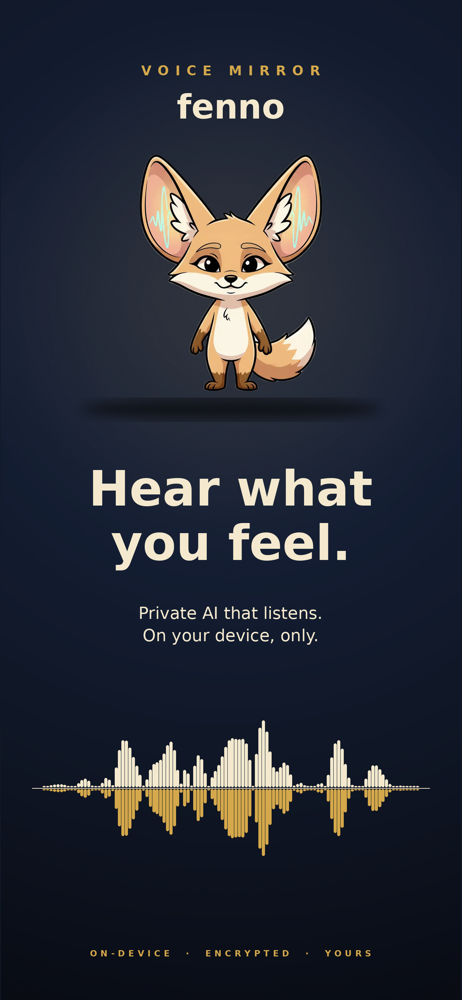
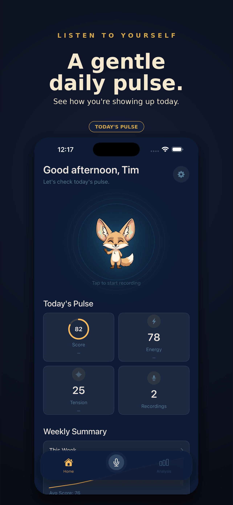
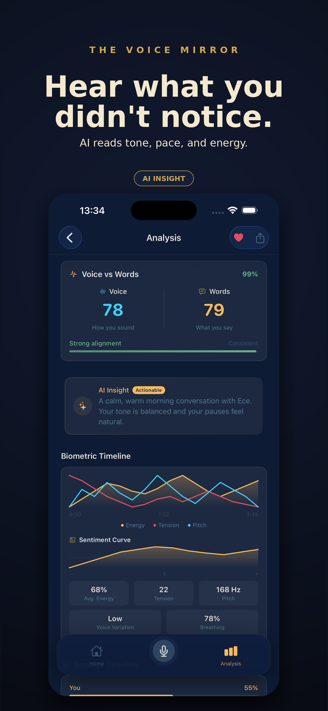
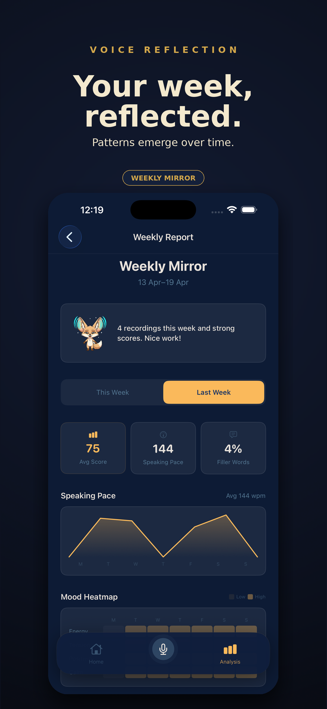
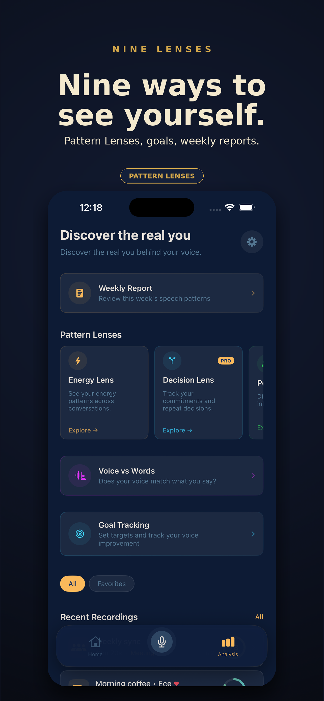
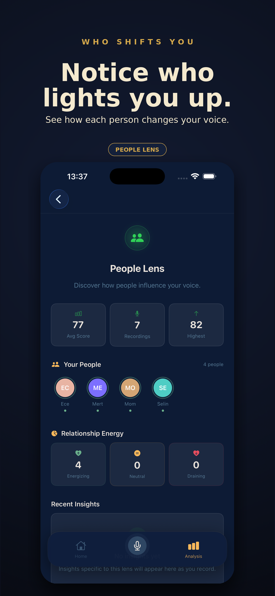
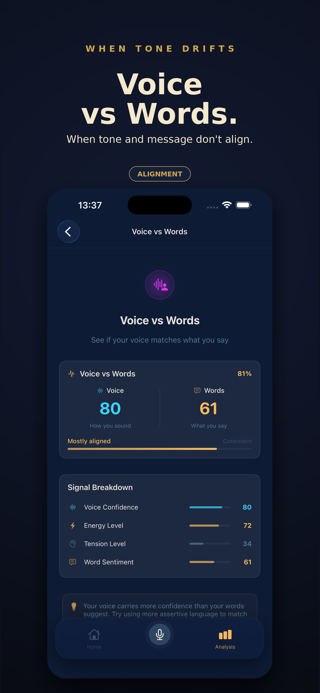
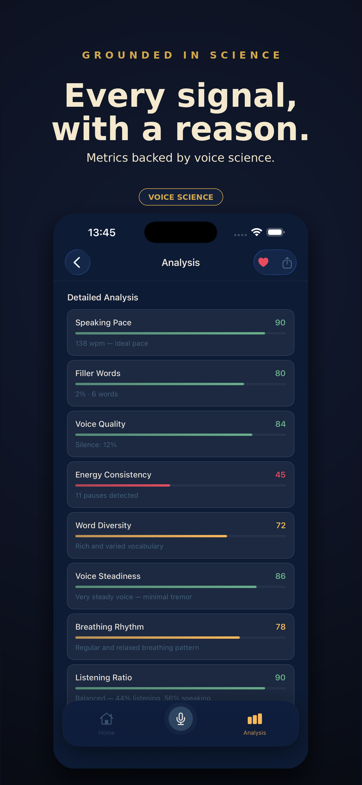
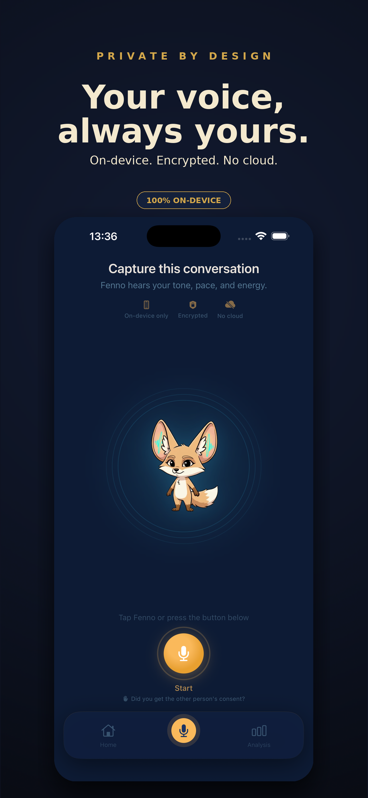

Most of how you feel never makes it into words. Fenno listens to your tone, pace, and energy — and quietly shows you the version of yourself you rarely get to see.
On-device · Encrypted · Yours









No forms. No mood emojis. You just talk, and Fenno does the noticing.
The emotion beneath the words. Fenno reads the energy level, pitch variation, and vocal intensity in your speech.
How present you really were. Your speaking tempo and verbal habits reveal focus, anxiety, or calm.
The shape of your mood across a conversation. Track how your emotional tone shifts from start to finish.
When your tone and your message don't match. Fenno spots the misalignment you might miss yourself.
Subtle signals of stress your conscious mind doesn't notice. Voice steadiness and breathing rhythm reveal tension.
Energy, Decision, People — nine different ways to read yourself over time. Weekly Mirror reflects the week you just lived.
For the quietly curious — people who want to understand themselves more clearly.
Understand yourself better without journaling every night. Let your voice reveal what writing sometimes can't.
Notice which people energize you and which drain you. Fenno tracks relationship patterns across conversations.
Catch anxiety and tension in your voice before it becomes a mood. Your voice knows before you do.
Prepare for hard conversations by reviewing easy ones. Build a calmer, more aware relationship with your own speech.
Your voice is not training data. Your voice is yours.
All voice analysis runs locally on your iPhone. Nothing is sent anywhere.
Your recordings are encrypted on your device. No cloud, no accounts, no uploads.
Zero third-party trackers. No one reads your transcripts. No data selling — ever.
Full control over your data. Remove any recording or analysis instantly.
Start free. Go deeper when you're ready.
Your voice carries far more information than the words it produces. Research in affective computing and speech prosody has long established that vocal biomarkers — including pitch variation, speaking rate, pause patterns, and spectral energy — are reliable indicators of emotional states, cognitive load, and stress levels. Fenno builds on this science to create a personal voice mirror that reflects these invisible signals back to you.
Using on-device machine learning and Apple's speech analysis frameworks, Fenno extracts biometric features from your voice in real time: energy level, speaking pace, filler word frequency, sentiment trajectory, breathing rhythm, and voice steadiness. These signals are combined into a daily Pulse Score — a snapshot of how you're showing up today.
The Voice vs Words feature compares your vocal tone against the actual content of your speech using natural language processing. When your words say "I'm fine" but your voice says otherwise, Fenno catches the misalignment — a pattern most people never notice in themselves.
Nine Pattern Lenses — including Energy, Decision, and People — provide different angles for self-reflection over time. The Weekly Mirror aggregates your recordings into a gentle reflection of the week you just lived, surfacing trends in mood, energy, tension, and relational dynamics.
Fenno is developed by umay.dev, with a deep commitment to making voice-based wellness tools that are private, accessible, and genuinely useful for daily self-awareness.
Fenno is a wellness tool, not a diagnostic or recording tool. Before capturing a conversation, please make sure everyone involved is aware and consents. Laws on consent vary by region.